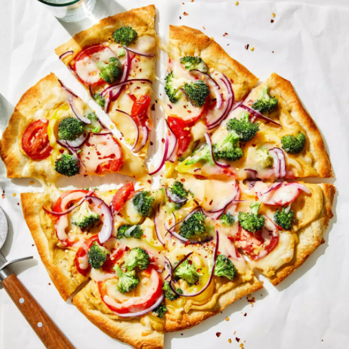

Pizza

The modern birthplace of pizza is southwestern Italy's Campania region, home to the city of Naples.
Founded around 600 B.C. as a Greek settlement, Naples in the 1700s and early 1800s was a thriving waterfront city.
Technically an independent kingdom, it was notorious for its throngs of working poor, or lazzaroni.
Ingredients
- 1 (10 ounce) can refrigerated pizza crust dough
- 1 cup hummus spread
- 1½ cups sliced bell peppers, any color
- 1 cup broccoli florets
- 2 cups shredded Monterey Jack cheese
Steps
- Preheat the oven to 475 degrees C (220 degrees C).
- Roll out pizza crust and place on a pizza pan or baking sheet.
Spread a thin layer of hummus over the crust.
Arrange sliced peppers and broccoli over the hummus, and top with shredded cheese.
- Bake in the preheated oven until the crust is golden brown and cheese is melted in the center, 10 to 15 minutes.
Slice and serve.